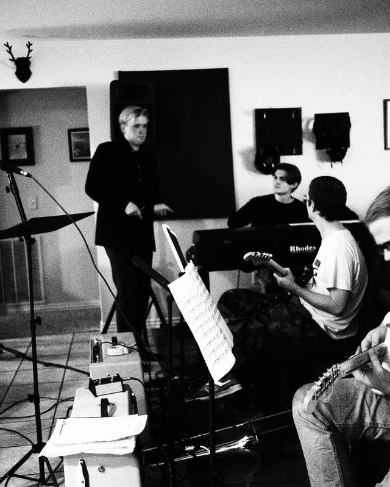
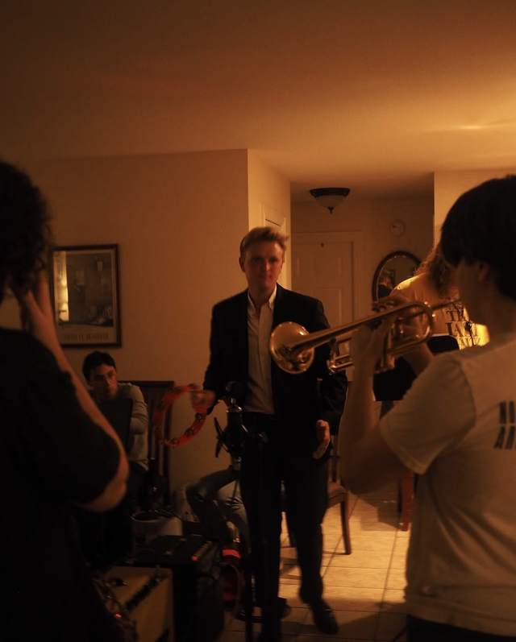
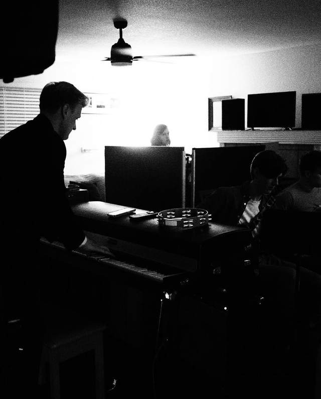

Founder & Producer
Arkansas House Records
A Bentonville label, run out of a house that's half recording studio — founded by Collin, built for the little guy.
Arkansas House Records is a Bentonville label with a simple mission: help talented singers and players who don't have a band, don't have songs, and don't have anything released — by writing them the best songs possible.
The label runs regular low-pressure meet-and-greet sessions where local musicians can plug in, play, and make mistakes, backed by a de facto house band. No big money. Local, and for the little guy.
- Kenny GoodmanDebut album · "You Stay On My Mind"
- Avery Rytel Bruce"When You Tell Me"
- Ian Curriden"Fire In My Heart" · Sax
- Dave WyantAHR Live sessions
You're on Collin's personal site, not the label's. The label's own website (arkansashouserecords.com) is currently offline — you can view a March 2025 archived copy on the Wayback Machine. For the label's live links — releases, roster, and sessions — use the AHR Linktree.


